Battles Involving the Islamic State (IS/ISIS/ISIL)
Battles Involving the Islamic State (IS/ISIS/ISIL)
Updated: 2/9/25
Table of Contents
- Caliphal Progression
- Notable Battles Involving the Islamic State in Bilad ash-Sham
- Notable Battles Involving the Islamic State in Iraq
- Notable Battles Involving the Islamic State East Asia Province (AKA Abu Sayyaf)
- Notable Battles Involving the Islamic State Sahel Province (Formerly Known as Greater Sahel)
- Notable Battles Involving Islamic State West Africa Province (Excluding Shekau's Boko Haram in 2015 to 2016)
- Notable Battles Involving Islamic State Libya Province
- Notable Battles Involving Islamic State - Khorosan Province
- Notable Battles Involving Islamic State - Central Africa Province (AKA ADF Baluku and al-Shabaab the Mozambican group)
Caliphal Progression
• October 27, 2019: First "caliph" and senior commander of the Islamic State  was killed by an American
was killed by an American  raid in northern Idlib governorate, Syria. Baghdadi had led the terrorist organization through its nascent phase as an insurgency in Iraq
raid in northern Idlib governorate, Syria. Baghdadi had led the terrorist organization through its nascent phase as an insurgency in Iraq  , to its growth as a quasi state in the Mashriq, all the way to its collapse in the Mashriq and return once again to an insurgency. His location was hotly searched by both HTS
, to its growth as a quasi state in the Mashriq, all the way to its collapse in the Mashriq and return once again to an insurgency. His location was hotly searched by both HTS  and the SDF
and the SDF  . The latter provided the direct location to the American , who made the decision to attack. Multiple helicopters, drones, and fighters were used to provide close air support as US SOF and K9 units moved in. Al-Baghdadi detonated his vest as US forces had cornered him, killing him and two of his children. President Trump proclaimed that he had "died like a dog" in a conference a few hours later, boasting about his operation for years to come. While US officials initially claimed that the raid had not killed civilians, NPR reporting from the time and from 4 years later reported and confirmed atleast two civilian fatalities.
. The latter provided the direct location to the American , who made the decision to attack. Multiple helicopters, drones, and fighters were used to provide close air support as US SOF and K9 units moved in. Al-Baghdadi detonated his vest as US forces had cornered him, killing him and two of his children. President Trump proclaimed that he had "died like a dog" in a conference a few hours later, boasting about his operation for years to come. While US officials initially claimed that the raid had not killed civilians, NPR reporting from the time and from 4 years later reported and confirmed atleast two civilian fatalities.
• February 3, 2022: American troops launched an operation in northern Idlib governorate, Syria, killing Islamic State "caliph" and senior official Abu Ibrahim al-Hashimi al-Qurashi. The operation had also killed 13 people, including 10 civilians. The US had blamed this on the blast of the "caliph's" suicide bombing. Abu Ibrahim was a long time veteran of the terrorist organization, with his experience stretching all the way to the group's earliest iterations as an al-Qaeda  affiliate in Iraq . During his tenure, he had greatly grown the Islamic State in major parts of Africa. It is claimed that he was found by US spy drones, who had spotted a bearded man bathing on top of a building matching the "caliph's" physical description. Short lived Abu al-Hassan al-Hashimi al-Qurashi would succeed him as caliph of the group.
affiliate in Iraq . During his tenure, he had greatly grown the Islamic State in major parts of Africa. It is claimed that he was found by US spy drones, who had spotted a bearded man bathing on top of a building matching the "caliph's" physical description. Short lived Abu al-Hassan al-Hashimi al-Qurashi would succeed him as caliph of the group.
• October 15, 2022: "Caliph" Abu al-Hasan al-Hashimi al-Qurashi detonated his suicide vest during a gun battle with reconciled rebels in southern Daraa governorate. As an Iraqi administrator and later as the emir of IS ' security branch, he had jumped all over the Middle East, before traveling to southern Syria  possibly to ring up support for the group among disaffected former rebels, where he was ratted out by a surrendered shura council member. He was replaced by Abu al-Hussein al-Husseini al-Qurashi.
possibly to ring up support for the group among disaffected former rebels, where he was ratted out by a surrendered shura council member. He was replaced by Abu al-Hussein al-Husseini al-Qurashi.
• April 29, 2023: "Caliph" Abu al-Hussein al-Husseini al-Qurashi was killed by HTS forces in Idlib governorate, according to the spokesperson of the group and American officials . The Turks  had also claimed that he had detonated himself during a raid in Aleppo governorate, a claim the Americans have denied. His attempts at keeping a low profile had failed. He was the shortest reigning caliph in the group's history. Abu Hafs al-Hashimi al-Qurashi would replace him as "caliph" of the Islamic State . Abu Hafs remains the leader of the group to this day, and is now the second longest holder of the title, only before Abu Bakr al-Baghdadi.
had also claimed that he had detonated himself during a raid in Aleppo governorate, a claim the Americans have denied. His attempts at keeping a low profile had failed. He was the shortest reigning caliph in the group's history. Abu Hafs al-Hashimi al-Qurashi would replace him as "caliph" of the Islamic State . Abu Hafs remains the leader of the group to this day, and is now the second longest holder of the title, only before Abu Bakr al-Baghdadi.
Notable Battles Involving the Islamic State in Bilad ash-Sham
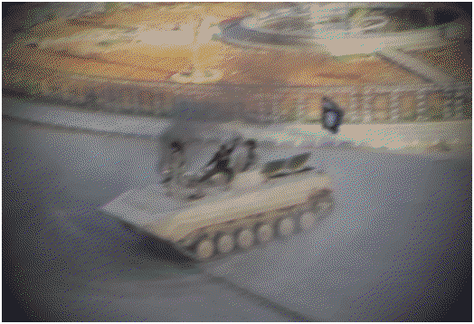
Fig 1. ISLAMIC STATE MILITANTS DOING DONUTS IN RAQQA FOLLOWING THEIR DECLARATION OF KHILAFAH c. APRIL OF 2014
• January 14, 2014: After a few days of clashes, then al-Qaeda affiliate Islamic State had seized all of Raqqa from opposition forces  . IS had already established a presence in Raqqa following their involvement in the initial battle to seize it nearly a year prior from Assad . As IS forces moved in to the city to establish administrative control, clashes erupted with opposition groups, quickly leading to their aforementioned victory. The Islamic State would make Raqqa its capital, holdingthe city with an iron fist. Many Christians and other minorities in the city were executed or forced to leave.
. IS had already established a presence in Raqqa following their involvement in the initial battle to seize it nearly a year prior from Assad . As IS forces moved in to the city to establish administrative control, clashes erupted with opposition groups, quickly leading to their aforementioned victory. The Islamic State would make Raqqa its capital, holdingthe city with an iron fist. Many Christians and other minorities in the city were executed or forced to leave.
• April 3, 2014: Islamic State and al-Nusra  front members stormed the city of Arsal in Lebanon
front members stormed the city of Arsal in Lebanon  , attempting to seize control and capture as many Lebanese and Hezbollah
, attempting to seize control and capture as many Lebanese and Hezbollah  soldiers as possible. After a few days of clashes, however, the groups were forced to retreat from the town, defeated. IS and al-Nusra would move their forces closer to the Qalamoun mountains and the Syrian border.
soldiers as possible. After a few days of clashes, however, the groups were forced to retreat from the town, defeated. IS and al-Nusra would move their forces closer to the Qalamoun mountains and the Syrian border.
• April 10, 2014: In a sign of the increasingly complicated Syrian war, the Islamic State launched a military offensive in the Deir Ezzore governorate against the opposition . Cut off from the main strongholds in the southwest and the northwest, the rebels were either destroyed, some defecting to IS . With the countryside under its control, IS moved to enact a siege upon Assad Regime controlled Deir Ezzore city and its surrounding military bases. The outcome marked perhaps the second greatest victory for IS up to this point (the first being Raqqa) during the whole campaign.
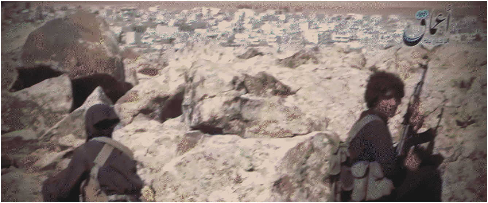
Fig 2. IS FIGHTERS OVERLOOKING THE CITY OF KOBANI c. OCTOBER OF 2014
• September 15, 2014: The Islamic State , riding high on their successes against the opposition in Deir Ezzor governorate, put Assad controlled Deir Ezzor city, and the various military bases around it, under siege. The Islamic State attempted to break it multiple times, sometimes getting relatively close, but never fully seizing it. Eventually in 2017, Assad regime forces , in conjunction with shi'ite militias and Russia  , linked up with the pocket from the western desert, marking a significant victory by the Assads against IS .
, linked up with the pocket from the western desert, marking a significant victory by the Assads against IS .
• September 18, 2014: Islamic State forces launched a grand offensive aimed at seizing the Kurdish YPG  held town of Kobani. In a matter of a few weeks, IS had seized most of Kobani canton and had besieged the town itself, making many international observers brace for a repeat of Sinjar (this time with Kurds). But to the dismay of IS commanders, the battle dragged on for too long, becoming a futile meat grinder. Despite constant IS conscript and suicide bomber pressure, the Euphrates Volcano
held town of Kobani. In a matter of a few weeks, IS had seized most of Kobani canton and had besieged the town itself, making many international observers brace for a repeat of Sinjar (this time with Kurds). But to the dismay of IS commanders, the battle dragged on for too long, becoming a futile meat grinder. Despite constant IS conscript and suicide bomber pressure, the Euphrates Volcano 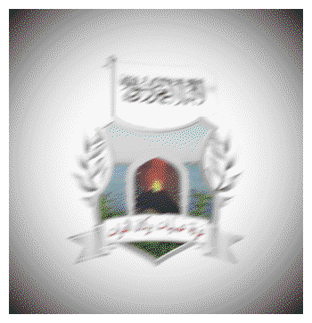
coalition of FSA elements and the YPG were able to stall and even push them back, with the help of American air support and Peshmerga  volunteers. By March of 2015, the Euphrates Volcano room had reversed all of IS ' gains, shattering the previously held belief that they were invincible.
volunteers. By March of 2015, the Euphrates Volcano room had reversed all of IS ' gains, shattering the previously held belief that they were invincible.
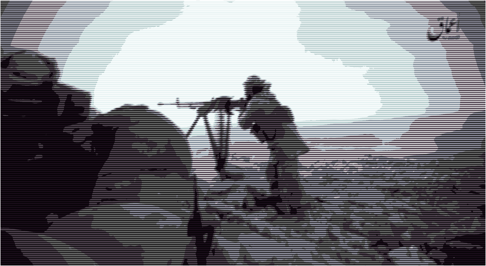
Fig 3. ISLAMIC STATE MILITANT FIRES MACHINE GUN NEAR REGIME OFFENSIVE ON PALMYRA c. MARCH OF 2016
• May 13, 2015: While stumbling in combat against the Kurds up north, the Islamic State made major gains in the central Syrian desert against the Assad regime, taking Palmyra, an important desert junction, in only a week. For the next two years, IS and Assad 's forces, who were backed up by Wagner  , the Russians , and the Iranians
, the Russians , and the Iranians  , traded control of Palmyra a few more times before Assad was able to secure his gains in an offensive in Palmyra in 2017. During the intermittent IS occupation, the militants destroyed much of the ancient heritage of Palmyra. Palmyra's capture by Assad allowed him to advance further into eastern Homs and Deir ez Zour governorates.
, traded control of Palmyra a few more times before Assad was able to secure his gains in an offensive in Palmyra in 2017. During the intermittent IS occupation, the militants destroyed much of the ancient heritage of Palmyra. Palmyra's capture by Assad allowed him to advance further into eastern Homs and Deir ez Zour governorates.
• May 30, 2015: The Islamic State launched a large offensive on the SAA -YPG controlled city of al-Hasakah in Syria's northeast. The Islamic State made good progress from the south, but they were soon pushed back by the SAA . The group would try again a few weeks later, but would be soon fully pushed back in a matter of a month, losing hundreds of men. Soon, YPG forces pushed further south, finally securing the city from further organized IS attack.
• May 31, 2015: The Rojavan Kurds and Syrian rebel factions recaptured Tell Abayad from the Islamic State , linking up fighters from Kobani canton with those from al-Hasakah and Qamishli. The "Euphrates Volcano " operations room seized the Tell Abayad and Ayn Issa two weeks after the offensive's start. The capture was a major defeat for IS and a large victory for Euphrates Volcano , soon to be christened as the Syrian Democratic Forces .
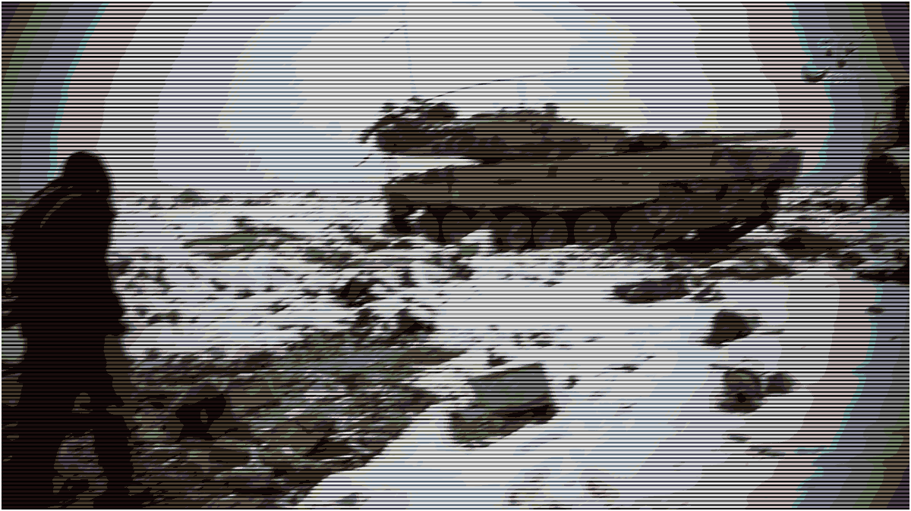
Fig 4. IS MILITANTS FILMING CAPTURED TURKISH LEOPARD II MBTS NEAR AL-BAB c. DECEMBER OF 2016
• February 24, 2016: From Al-Hawl and al-Hasakah, the SDF attacked and captured the city of al-Shadadi, an important route between the capitals of the Islamic State in Syria and Iraq : Raqqa and Mosul. It was also a key training base and important jumping off point for an offensive against the Hasakah province. The fall of Shadadi ended its vast slave markets and also marked the full liberation of Hasakah province.
• August 12, 2016: The SDF secures the large regional center of Manbij in the Aleppo countryside. This development came after the the SDF launched a major regional offensive, encircling the city and putting it under siege until IS forces started to crack under pressure. Previously, Manbij was notorious for its role in smuggling IS fighters from the Turkish border and the city's fall marked the largest victory against the Islamic State up to that point since the end of Kobani. From Manbij, the SDF would launch incursions into the Jarabulus and al-Bab countryside. American and other coalition forces were also heavily involved in support roles.
• November 23, 2016: During the Euphrates Shield Offensive, the Turks wrestled control of the IS controlled city of al-Bab in Aleppo countryside. Meanwhile, the Kurdish-led SDF and the Assad Regime moved in from Afrin and Manbij in order to cut off the Turks from advancing further. By March of next year, Turkish forces were finally able to crack and capture al-Bab, suffering heavy losses, including 10 Leopard 2s. The fall of al-Bab would result in the effective end of IS control in Aleppo governorate.
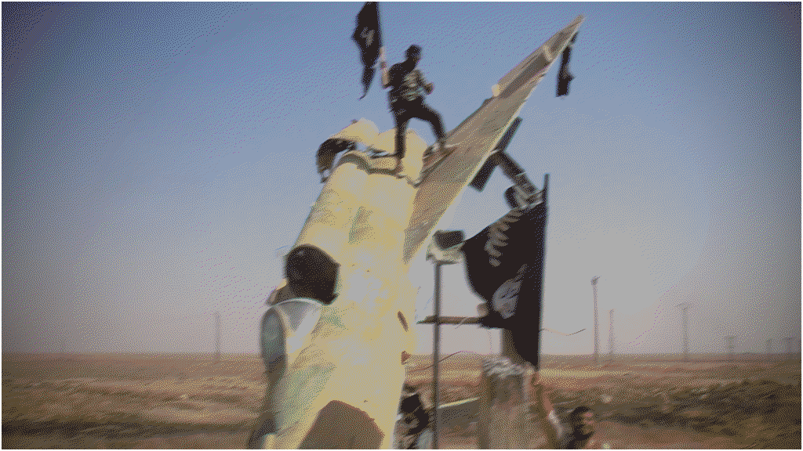
Fig 5. ISLAMIC STATE MILITANTS IN TABQA AIRBASE FOLLOWING ITS CAPTURE FROM REGIME FORCES c. AUGUST OF 2014
• May 10, 2017: The SDF announced that both Tabqa city and its strategically significant dam were captured from Islamic State forces. The offensive started in February with US marines landing near Tabqa, allowing the SDF to go around Tabqa and besiege both the city and the dam. Though the campaign was slow and costly, the fall of Tabqa was a necessary stepping stone for the SDF before they could unleash hell upon Raqqa.
• August 28, 2017: Hezbollah -Assad -LAF forces put the final nail in the coffin for Islamic State militancy in the Qalamoun mountains. For weeks, Islamic State fighters engaged in high altitude warfare against advancing enemy forces, who operated independently due to mutual animosity. For some god awful reason, the Assadist coalition allowed for 400 IS militants to be escorted to Abu Kamal. This was highly condemned by the American -Lebanese coalition, which opened fire from above, stranding the convoy in central Syria.
• October 9, 2017: Islamic State and HTS forces engaged in heavy clashes as the SAA had begun a major offensive in the region bordering Idlib, Hama, and Aleppo governorates. The regime essentially ignored or even cheered on the fighting between those two. After all, it made HTS , the real power player in that area, much weaker. Eventually, Assad regime forces had captured HTS controlled Abu al-Duhur and its strategic airbase in a pincer attack, encircling IS forces to its southeast in Androna. After ignoring the group, the Assadists finally laid down the hammer and destroyed the IS pocket there.
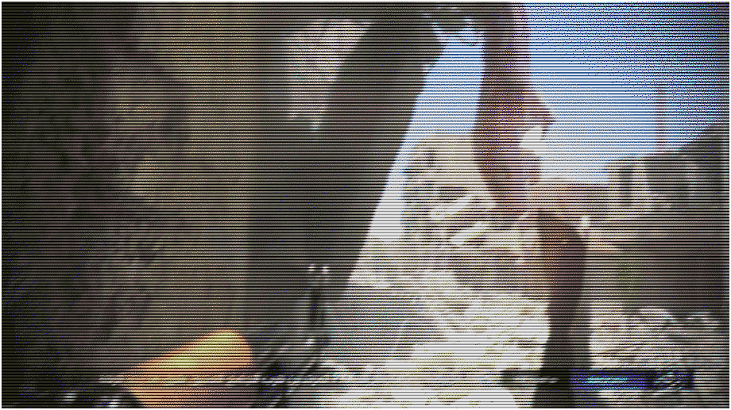
Fig 6. IS FIGHTERS CLASH WITH THE SDF IN RAQQA c. JULY OF 2017
• October 20, 2017: The SDF declared that the entire city of Raqqah, the once great capital and stronghold for the Islamic State , had fallen after a four month tough campaign through the city that involved frequent coalition airstrikes and intense urban warfare. The SDF , including its Arab and Internationalist factions, was the main ground force fighting with the coalition, putting the city under siege through the north and the south, with the others mainly taking up an advisory or air support role. Up to 1500 civilians were killed, the vast majority of its population fled, and 4/5ths of the city was destroyed in the fighting. The cost was heavy, but the eventual outcome? A slow but undeniable down curve for the fates of the Islamic State . This, along with the fall of Mosul to Iraqi Security Forces conventional war.
• December 6, 2017: Assad Regime forces recaptured Abu Kamal border city from the Islamic State , marking the final victory in Damascus' campaign against the group in the east. Maybe as a show of their weakness and incompetence, despite major external backing, the Assadists traded villages and blocks for more than a month, before they consolidated control. In comparison, the battle of Hajin, the last capital of the fledging caliphate, took a little more than a week to fall to SDF and coalition troops.
• May 21, 2018: Assad Regime forces finally recaptured both the opposition controlled suburbs of southern Damascus and IS ' Palestinian Yarmouk camp. IS forces had brought stiff resistance, as they began to operate the tunnels and shelters of Yarmouk. Eventually, however, IS fighters had agreed to a deal to leave Yarmouk, ending their presence there. The campaign was the final nail in the coffin for the anti-Assad forces in Damascus, whom controlled major suburbs in the east and south for years.
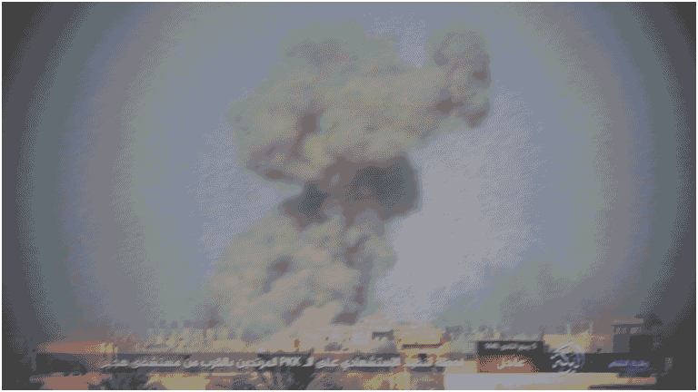
Fig 7. RESULTS OF AN IS SUICIDE BOMBING AGAINST SDF FORCES DURING THE BATTLE OF HAJIN c. DECEMBER OF 2018
• July 21, 2018: After destroying the last of the rebels in the Daraa governorate, the Assad regime launched an operation to seize Wilaya Hawran's IS pocket. Wilaya Hawran fell after 10 days of clashes. It was perhaps the second to last IS controlled territory in Syria to fall to anti-IS hands. The last being the Euphrates pocket.
• December 14, 2018: During the final stages of the conventional campaign against the Islamic State known as "Al-Jazeera Storm", the SDF captured the town of Hajin, the capital of the flailing and sordid Caliphate. Fighting incurred heavy casualties as coalition airstrikes hammered the Islamic State .
• March 23, 2019: The SDF and coalition forces declared that the last pocket of Islamic State resistance in Syria, Baghuz Fawqani, had fallen. This declaration came after a month of brutal fighting with high civilian casualties in Baghuz's "tent city". Clashes still continued for days with coalition forces combing through the tent city's vast tunnel system. From now on, the war against the Islamic State would primarily be one of counterinsurgency against a prevalent, but low level threat.
• December 30, 2020: With much of the world distracted by the high profile COVID-19 pandemic and Syria reeling from it and sanctions, IS militants ambushed a bus filled with reportedly elite Assad Regime troops near the village of Shula, killing 39 in one of the deadliest attacks during their post-Caliphate insurgency. The insurgency would ramp up over the course of the early 2020s, with 2024 becoming one of the deadliest years for IS attacks since 2019.
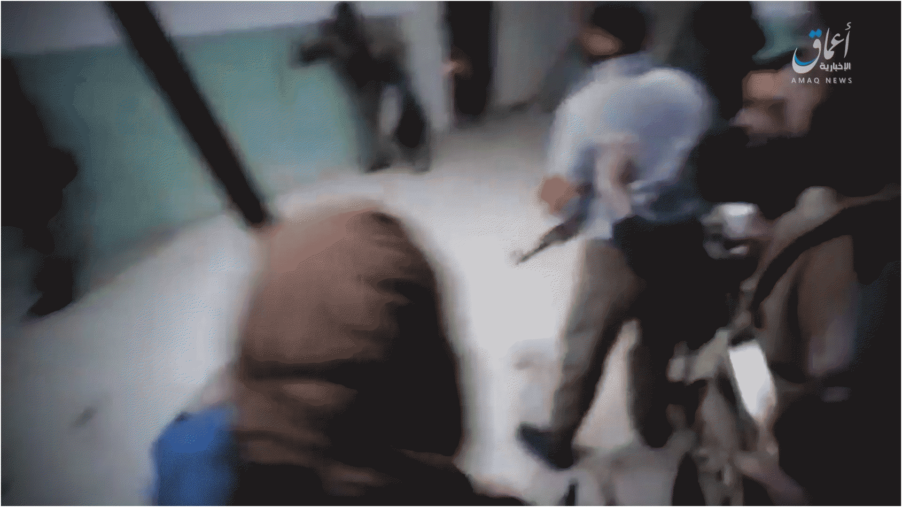
Fig 8. ISLAMIC STATE MEMBERS EXECUTING PRISON BREAK IN AL-HASAKAH, SDF TERRITORY c. JANUARY OF 2022
• January 20, 2022: Islamic State members violently broke out of a major prison in SDF controlled al-Hasakah, resulting in perhaps the largest battle involving IS since Baghuz-Fawqani. IS forces used everything at their disposal in order to heal or lease their comrades, including suicide bombs and mass hostage taking. Eventually, the militants were killed (with coalition air support), but many got away, including a few commanders. In the end, nearly 350 IS militants were killed, thousands rearrested, and 120-150 SDF forces were killed.
• December 6, 2024: During the rapid offensive that destroyed the Assad Regime , the Islamic State took advantage of the chaos to seize a few villages in Deir Ezzor, resulting in their first claim of control in Syria for years. However, once SDF and later STG troops arrived, the group was swiftly crushed. It was widely expected that the terror group would grow in the power vacuum. However, generally there weren't as many attacks as people believed there could be. Though IS began to recruit from some disillusioned and hardline former HTS fighters.
• December 13, 2025: A Syrian security officer possibly affilated with the Islamic State ambushed American and Syrian troops in the desert town of Palmyra, killing two Americans and one interpreter. It marked one of the deadliest episode in Syria for American troops in years. In response, Donald Trump launched Operation Hawkeye Strike, attacking Islamic State positions across the Syrian desert.
Notable Battles Involving the Islamic State in Iraq
• January 4, 2014: Al-Qaeda affiliate Islamic State seized control of Fallujah, the previous home for Sunni resistance. The fall of Fallujah helped accelerate the collapse of northern Iraq that would happen a year later. Fallujah is instrumental for the group's offensive on Baghdad.
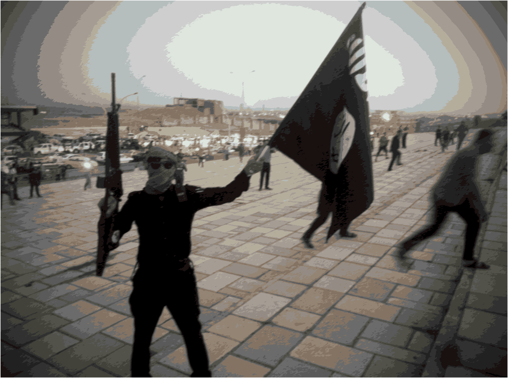
Fig 1. AN ISLAMIC STATE MILITANT CELEBRATES IN MOSUL WEEKS AFTER ITS SEIZURE c. JUNE OF 2014
• June 4, 2014: The Islamic State forcibly seized control of the large city of Mosul after less than a week of fighting, resulting in perhaps their largest military victory ever. Mosul is the largest city in northern Iraq and the second largest city in the country as a whole, making its fall a defining moment that separated the IS campaign from earlier insurgencies. They sandwiched half manned and panicked Iraqi security forces from both the west and the east, forcing their disastrous and chaotic withdrawal down south. The Islamic State would use Mosul as their capital in Iraq , establishing brutal totalitarian control and often holding mass public executions of hundreds. Mosul would be left to their hands until Iraqi forces successfully recaptured it in June 2017, three years later.
• June 17, 2014: With Mosul safely under their control, the Islamic State turned its eyes on Kirkuk, a major city in Iraq 's north recently captured by the Iraqi Kurdish Peshmerga forces. However, unlike the Iraqi security forces , the Peshmerga were able to repel the Islamic State with American air support. Later attempts at taking Kirkuk also failed, with the Peshmerga pragmatically working with shi'ite militias. They would stand their ground better than most of the other anti-IS factions during this time.
• June 26, 2014: The Iraqi security forces launched an offensive on Tikrit, the birthplace of Saddam Hussein that had only recently been captured by Baathist and IS forces . The Islamic State successfully repelled Iraqi attacks, resulting in three downed helicopters. With little resistance, the Islamic State assaulted Camp Speicher and murdered up to 1,000 surrendered government troops, bringing out one of the worst terrorist attacks in history.
• August 31, 2014: Iraqi security forces linked up with local militiamen in the shi'ite Turkmen town of Amirili after it had suffered more than 80 days of brutal siege from IS . The relief of the siege finally gave some good PR for Maliki's government after months of constant loss and defeat at the hands of the terrorist group.
• October 2, 2014: Islamic State forces scored a non-insignificant victory against Iraqi forces by taking the city of Hit, which runs between the city of Haditha and its dam and the major stronghold of Ramadi. Soon after its fall, IS militants clashed with government troops for the surrounding bases, in a bid to further consolidate control over the Anbar governorate.
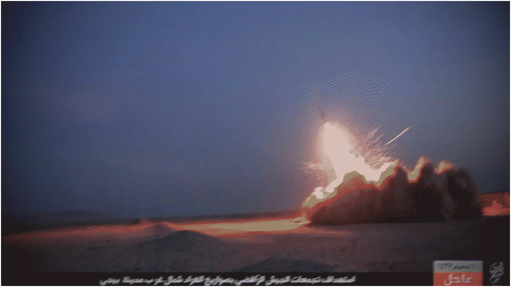
Fig 2. ISLAMIC STATE MILITANTS FIRE BM-21 GRAD MLRS NEAR BAIJI DURING IRAQI OFFENSIVE OPERATIONS c. OCTOBER OF 2015
• October 24, 2014: In the lead up to the Shia holiday of Ashura, Iraqi security forces and shi'ite militias liberated Jurf al-Sakhar, a strategic town located south of Baghdad and near the holy pilgrimage sites of Karbala. In an operation directly backed by Iran's Soleimani, nearly 500 Islamic State militants were killed, including many foreign fighters from Sunni regions of the world. It was a rare victory for the government in a pessimistic time.
• October 31, 2014: Iraqi forces reentered Baiji after its fall to Islamic State forces several months prior. For the nearly a year, Islamic State and Iraqi forces clashed over Baiji, with control flipping back and forth a few times, before Iraqi security forces , supported directly by thousands of shi'ite militias and extensive western air support, consolidated control of Baiji by November of 2015. The liberation of Baiji opened the gate to Hawija up north, and eventually, Mosul.
• December 8, 2014: During the months of November and December, the Islamic State repeatedly attempted to barge into the city of Ramadi using Inghisami and SVBIED forces. However, American airstrikes and IS failure to take al-Asad Airbase in Anbar, limited their success so much that in the end, they were only able to consolidate control over a few neighborhoods. The fall of Ramadi would have to be pushed back.
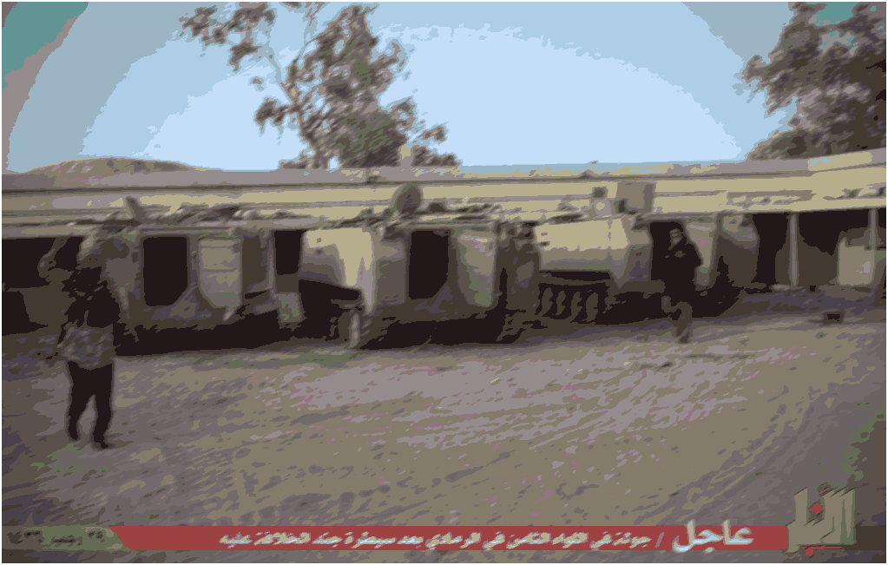
Fig 3. ISLAMIC STATE FIGHTERS EXAMINING CAPTURED IRAQI ARMY AFVS IN RAMADI c. MAY OF 2015
• March 11, 2015: Iraqi security forces moved to encircle Islamic State controlled Tikrit in the country's north. The birth place of Saddam Hussein turned into a tough urban battle, as Iranian officers and thousands of shi'ite militamen moved to reinforce security forces. Perhaps as a sign for later, the Iraqi government's cooperation with western airforces angered the shi'ite militias who threatened to withdraw. Both sides insisted that their operations were independent from each other, fighting narratives that could've fuelled sectarianism and Sunni anger. The liberation of Tikrit marked the greatest victory for the coalition in Iraq up to that point.
• May 14, 2015: The Islamic State launched a large scale armored offensive on Ramadi in Anbar governorate, taking security forces by surprise. Ramadi in its entirety fell to the Islamic State within three days, embarrassing the government and invoking criticism from western officials. The group attempted to advance from Ramadi city, but it was mostly fruitless. Meanwhile, security forces took half a year to wrestle back control of Ramadi from the group.
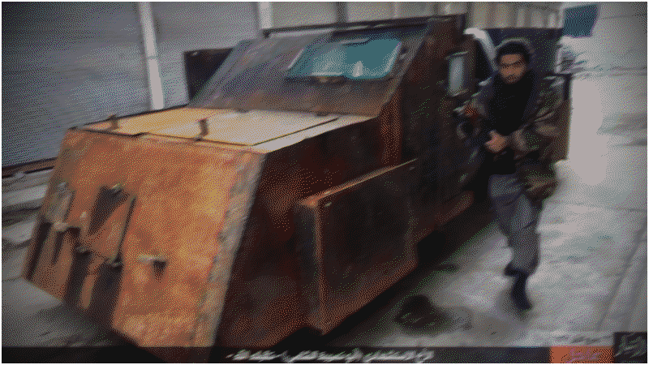
Fig 4. IS SUICIDE BOMBER GETTING READY WITH HIS SVBIED IN RAMADI c. JANUARY OF 2016
• December 28, 2015: After a back and forth campaign lasting nearly two years, Iraqi forces finally announced the total liberation of Ramadi, the largest city in Sunni Anbar governorate, from Islamic State militants. By the time Iraqi forces had finally fully cleared Ramadi in March of 2016, numerous congruent offensives were taking place against Mosul in the north and the stronghold of Fallujah near by. Maybe intentionally, Iranians and Iranian proxy groups did not participate in either the siege nor the urban fighting, with Iraq getting most of its external support from US air assets. This could have been done to prevent IS from achieving a sectarian propaganda victory over Iraqi forces . The victory was a major boon for security forces and began the process for IS ' unraveling in Iraq .
• May 30, 2016: After several months of tight and debilitating siege on Fallujah, Iraqi Security Forces entered the city with extensive coalition air support. They advanced through the city, engaging in tough urban combat with IS forces . They eventually cracked the shell, with neighborhoods falling quick succession. The fall of Fallujah would mark the largest IS defeat in Iraq before the fall of Mosul in 2017. Following the capture, shi'ite militias were accused of war crimes during and after the battle over the mainly Sunni city.
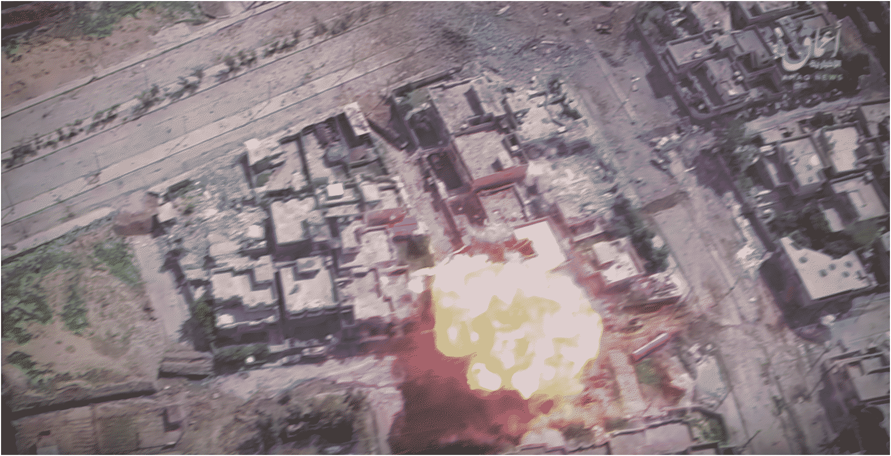
Fig 5. ISLAMIC STATE SVBIED TARGETS M1 ABRAMS MBT, IRAQI ARMY IN MOSUL c. MARCH OF 2017
• November 1, 2016: For the first time in over two years, Iraqi security forces reenter Mosul, the second largest city in Iraq and the capital of the Islamic State in Iraq , opening a pandora's box and starting one of the largest and longest urban battles of the 21st century. Under the cover of heavy coalition air power, Iraqi security forces and shi'ite militias slowly cleared the eastern half of the city and attempted to cut off and encircle it, meeting stiff and desperate Islamic State resistance. For their part, the Islamic State used everything, including suicide bombers, chemical attacks, tunnels, Inghisami attacks, human shields, and rudimentary, but still powerful, drone technology. During the winter of 2016, Iraqi security forces started to hook around western Mosul, capturing the airport, and putting the IS stronghold under siege. The Iraqis then slowly cleared the rest of Mosul through the spring and half of the summer, before finally declaring victory and destroying IS in the city. All in all, the fight for Mosul consumed a thousand Iraqi soldiers, up to 20,000 Islamic State militants, and up to 11,000 civilians, according to the AP. In total around 30,000, more or less, lost their lives in the long nine month battle. This was the definitive turning point in the conflict against the Islamic State in Iraq .
• August 22, 2017: Security forces reentered Tal Afar in the north, next to Peshmerga controlled territories. In a few days, after some heavy clashes, the town was captured and liberated. The fall of Tal Afar was another nail in the coffin of the group. Tal Afar is where many IS commanders originated from.
• October 4, 2017: Iraqi security forces and Iranian-backed shi'ite paramilitaries recaptured the city of Hawija in a rapid and relatively bloodless affair, with most militants surrendering themselves. It seems as though they realized that the writing was on the wall for their group. Hawija was the last Islamic State stronghold remaining in that part of the country.
• November 3, 2017: Iraqi security forces seized the al-Qaim border crossing with Assad's Syria , scoring the last great victory of the anti-IS campaign. Following the collapse of the Islamic State 's conventional capabilities, they transformed back into an insurgency, launching cell based attacks against local forces.
• January 12, 2022: Islamic State militants raided an Iraqi military base in Diyala governorate, eastern Iraq , during the night, killing 11 soldiers. In response, the Iraqi government launched an airstrike in northern Hatra district, killing seven militants. It was one of the deadliest attacks against the Iraqi military in months.
• August 31, 2024: Iraqi forces carried out a raid in al-Anbar province in search for an Islamic State commander in Iraq , who was found and killed. There were intense clashes, resulting in the deaths of 15 militants and the injuries of 7 American soldiers.
Notable Battles Involving the Islamic State East Asia Province (AKA Abu Sayyaf)
• April 9, 2016: Philippine forces  were ambushed by Islamic State aligned militants while attempting to conduct a search effort in the province of Tipo-Tipo in Muslim majority southern Philippines . The jihadists were able to kill 18 soldiers, including a whole platoon. However, the Philippine army continued to clear the province, announcing the seizure of the last IS stronghold by mid August.
were ambushed by Islamic State aligned militants while attempting to conduct a search effort in the province of Tipo-Tipo in Muslim majority southern Philippines . The jihadists were able to kill 18 soldiers, including a whole platoon. However, the Philippine army continued to clear the province, announcing the seizure of the last IS stronghold by mid August.
• April 11, 2017: Jihadist groups linked to the Islamic State clashed with Philippine security forces on the island of Bohol. The Philippine forces managed to kill two local IS affiliated commanders. 11 terrorists were killed, while 4 Philippine personnel were killed in clashes involving the country's airforce, navy, army, and police.
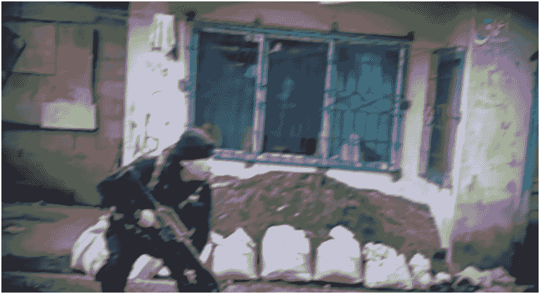
Fig 1. ISLAMIC STATE FIGHTER WITH M16 PATTERN RIFLE ON THE STREETS IN MARAWI c. MAY OF 2017
• May 23, 2017: The Philippines entered the southern Filipino city of Marawi, which was then occupied by various groups that had pledged allegiance to the Islamic State . For the next few days, Filipino armed forces engaged in heavy urban clashes with the jihadists, pushing them to the river and seizing the strategic bridges going to its center. Slowly, the Filipino military recaptured and cleared Marawi from the Islamic State , with help from the former guerilla organization and islamist group the Moro Islamic Liberation Front 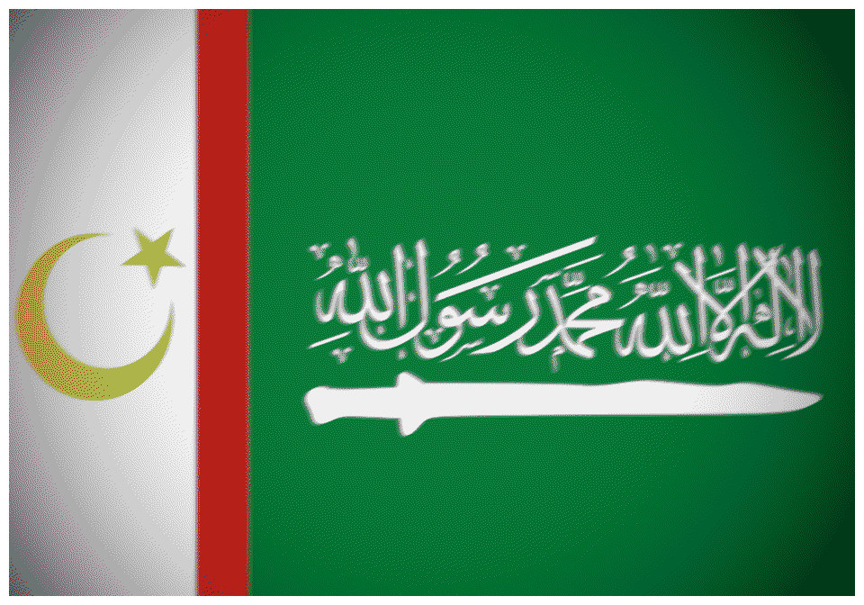
. The Islamic State committed numerous heinous war crimes, including forced conversion and hostage taking, while Philippine forces were accused of using torture and disproportionate force during the last parts of its campaign. By the end of the battle in late October of 2017, the majority of Marawi was destroyed, with 87 civilians dead, 168 security forces, and nearly a thousand terrorists killed.
Notable Battles Involving the Islamic State Sahel Province (Formerly Known as Greater Sahel)
• November 8, 2016: In one of their first attacks in Niger 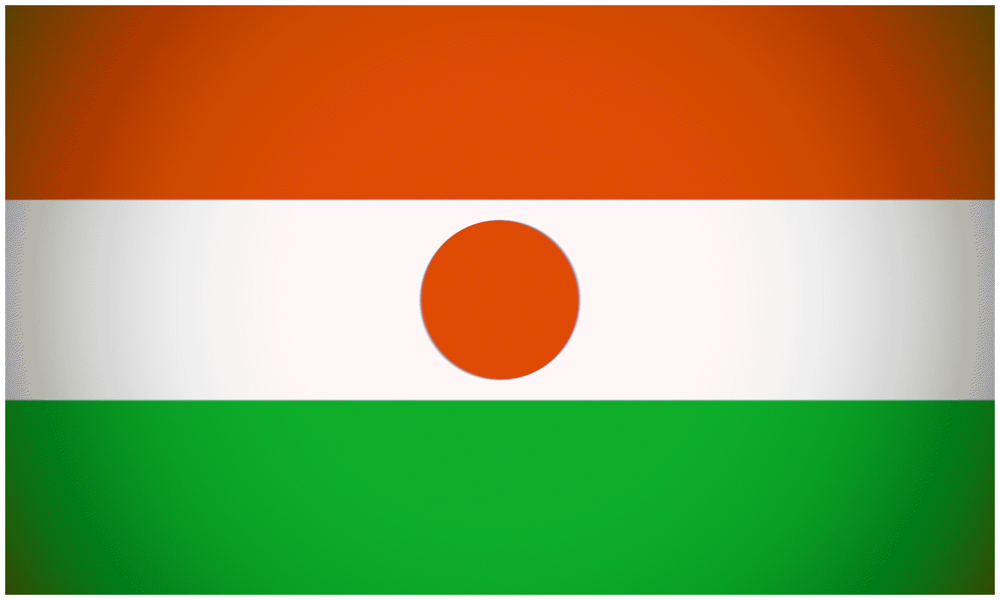
, IS militants attacked Nigerien troops in Bani Bangou near the Nigerien border, killing five before they were forced to withdraw, threatened by possible French  airstrikes. As the attack was quite botched, the terrorists did not take credit for it, but it was eventually traced to them.
airstrikes. As the attack was quite botched, the terrorists did not take credit for it, but it was eventually traced to them.
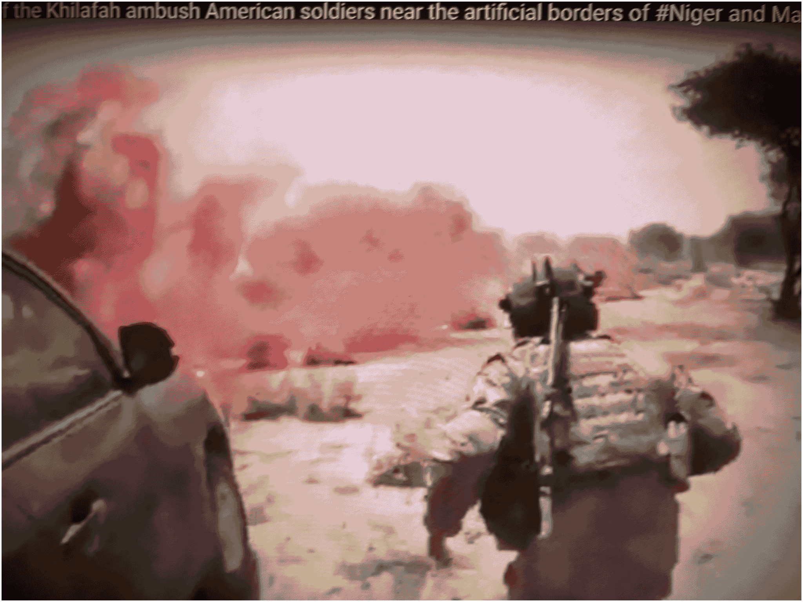
Fig 1. THE ISLAMIC STATE RELEASES BODY CAM FOOTAGE FROM DEAD AMERICAN SOLDIERS OF THEM GETTING AMBUSHED IN NIGER c. OCTOBER OF 2017
• July 9, 2017: In perhaps one of their first big attacks, Islamic State militants ambushed a large Malian military  convoy in the Menaka region, killing dozens, with dozens more reported missing. Menaka province would become the stronghold for the Islamic State for years to come.
convoy in the Menaka region, killing dozens, with dozens more reported missing. Menaka province would become the stronghold for the Islamic State for years to come.
• October 4, 2017: Islamic State militants executed a successful ambush on a joint Nigerien -American force that was on the way back to their base from a village near the Malian border. Four American special forces were killed in the attack, marking one of the worst incidents for American personnel in Africa in decades, perhaps on par with 2012's Benghazi. The Islamic State memorialized this attack through propaganda videos showing the success of their fighters. It was one of the sahel affiliate's inaugural attacks.
• November 18, 2019: Islamic State militants ambushed a Malian army convoy in Menaka province seeking to link up with Nigerien forces during an operation that started as retaliation for the Tongo Tongo ambush, killing up to 43 Malian soldiers . The jihadists used stolen vehicles and attempted to blend in to catch them by suprise, but were soon apprehended. Interestingly, the Islamic State claimed 30 soldiers killed, which was less than the final death toll was even higher, according to government sources.
• January 9, 2020: Islamic State militants launched a large attack on the Nigerien military base in Filingue Department, near the border with Mali , killing nearly 90 soldiers and only killing 7 IS militants, even with air support from the Americans and the French . The debacle was the largest so far of the insurgency, proving it so embarassing that the civilian government sacked the then chief of the army. For the next few years, similar attacks would occur on military bases, killing similar amounts of soldiers.
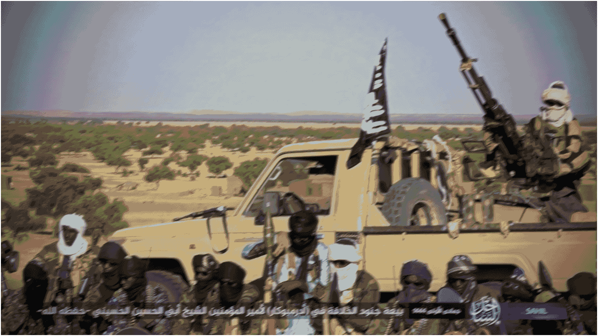
Fig 2. ISLAMIC STATE RECIEVES BAYAAS TO THEIR SELF PROCLAIMED KHILAFAH IN ANDERAMBOUKANE, MALI c. DECEMBER OF 2022
• August 17, 2021: French intervention forces, supported by drones and helicopters, attacked the Dangalous forest in Mali near the border with Niger , killing 10, including Adnan Abu Walid al-Sahrawi, the veteran west Saharan salafi jihadist and emir of the Islamic State in the Greater Sahel . It was the coalition's first great victory against the Islamic State in west Africa region. But instead of crippling the militants, they continued to grow and spread the very next year into Menaka province.
• March 12, 2022: The Islamic State Sahel Province launched a major offensive in the Menaka region against the forces of the Malian junta . One of the group's largest victories in years occurred in June of 2022, when they seized control of Anderamboukane on the Nigerien border from Malian military and paramilitary forces. Their offensive on Menaka city was also a large success, as they were able to seize most of the province except the city, putting it under a practical siege. Menaka also served as a sort of baptism of fire for newly arrived Wagner group forces to the country. The UN and various local sources claimed that hundreds of people were killed in massacres committed by the terrorist group.
• May 25, 2025: ISSP militants attacked a Nigerien military base in a village located in the country's desert region of Tahoua, near the Mali border. Using recon data from cheap drones, hundreds of ISSP militants on motorbikes raided the camp, killing 64 government troops, and sacking the base.
• June 19, 2025: Hundreds of Islamic State fighters attacked a Nigerien military base in Banibangou using mobile motorcycles and eight vehicles. They also attacked the town itself, plundering and burning it. 71 Nigerien soldiers were killed in the attack, while the junta claimed that "dozens of terrorists" were killed.
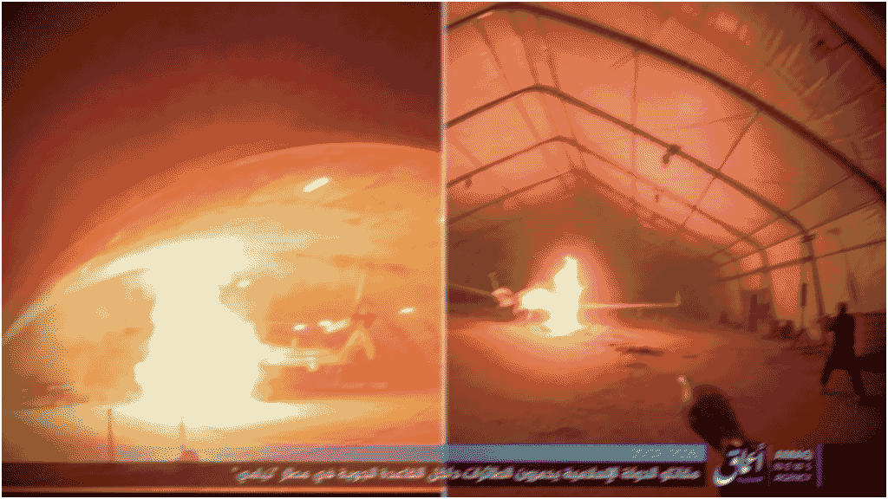
Fig 3. ISLAMIC STATE FIGHTERS FILM THEIR DESTRUCTION OF NIGERIEN AIRFORCE PLANES IN NIAMEY'S AIRPORT c. JANUARY OF 2026
• January 29, 2026: As states across the Sahel began to crack under the pressure, the Islamic State launched an attack once deemed impossible in the past. Dozens of IS militants entered Niamey airport in Niger with drone and mortar support and began destroying a couple of jets flown by the Nigerien airforce. While the airport was quickly recaptured, the damage was done both tactically and strategically, with IS forces even having the time needed to film propaganda.
• April 27, 2026: During late 2025 to mid 2026, the Mali Junta began cracking from multiple sides, especially from JNIM and the Tuareg FLA  . During the current and ongoing offensive (as of May 25, 2026), IS has actively joined the fighting, capturing Labbezanga before losing it to the Russians , and temporarily capturing large parts of Menaka city. While the offensive has stalled somewhat, pressure around the Junta remains extremely high.
. During the current and ongoing offensive (as of May 25, 2026), IS has actively joined the fighting, capturing Labbezanga before losing it to the Russians , and temporarily capturing large parts of Menaka city. While the offensive has stalled somewhat, pressure around the Junta remains extremely high.
Notable Battles Involving Islamic State West Africa Province (Excluding Shekau's Boko Haram in 2015 to 2016)
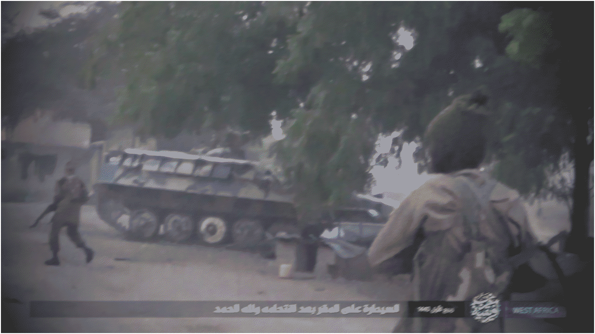
Fig 1. ISLAMIC STATE FIGHTERS RAID A NIGERIAN GOVERNMENT MILITARY BASE AND CAPTURE AFVS NEAR LAKE CHAD REGION c. NOVEMBER OF 2018s
• November 18, 2018: The Islamic State launched major offensives in Borno state against Shekau and Nigerian forces near Lake Chad. ISWAP was able to score numerous victories, seizing numerous villages and military bases, killing hundreds of soldiers and civilians. Despite some major Nigerian and coalition territorial victories, as well as leadership struggles and purges, ISWAP /JAS remained strong and active. In the end, ISWAP had kept control of parts of Borno state and the Chad Basin, where they continued terror attacks and ambushes.
• May 14, 2021: JAS militants clashed with ISWAP in the last remaining jihadist stronghold in the area, Sambisa Forest. IS militants overran JAS forces, seizing the forest, and killing Abu Bakr Shekau, long time leader of JAS , commonly known as Boko Haram . After Shekau's death, Islamic State West Africa would eclipse his group, becoming the largest jihadist organization in Bornu State, Nigeria .
• November 5, 2025: JAS militants launched a large offensive against the Islamic State West Africa in lake Chad, seizing multiple settlements and IS bases on the lake. JAS militants used an impressive force of armed boats, marking one of first amphibious operations in years. By its end, four JAS militants were killed in comparison to up to 200 IS militants, a crazy casualty ratio for an amphibious invader.
Notable Battles Involving Islamic State Libya Province
• October 5, 2014: A salafi jihadist militia in control of Derna made baaya to Caliph Abu Bakr al-Baghdadi and joined the Islamic State . Derna's fall would give IS an important foothold in eastern Libya  , near the territory of Khalifa Haftar
, near the territory of Khalifa Haftar 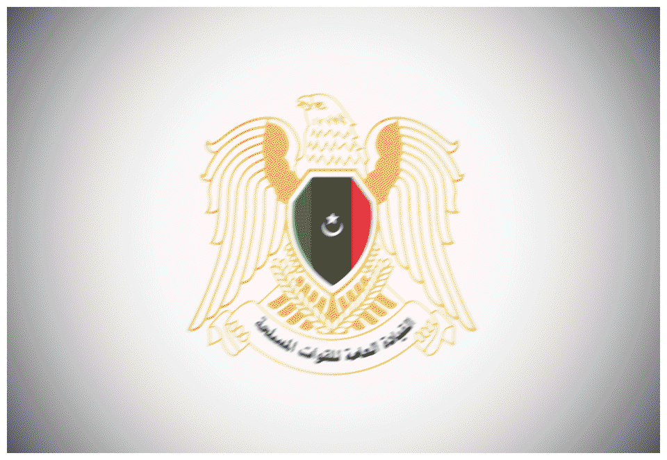
. Over the next year and a half, Haftar 's LNA and the Egyptians  planned extensively for its liberation.
planned extensively for its liberation.
• March 7, 2015: A few months after its capture by IS , Haftar launched a major counteroffensive against the city of Derna, imposing a siege. On the otherhand, the rival Shura Council of Mujahideen in Derna launched their own offensive against IS , pushing them out of most of the city. By July, the jihadist militia had kicked IS out of Derna. Eventually, Derna was attacked, besieged, and captured by Haftar , destroying the jihadist militia.
• May 31, 2015: The Islamic State captured Sirte and its nearby airbase after more than 10 weeks of clashes with a rival local salafist militia. The fall of Sirte was the biggest victory for the group in Libya , with it becoming the capital and headquarters for a new IS wilaya . One year later, the newly organized and internationally recognized Government of National Accord would launch a counteroffensive to take it back.
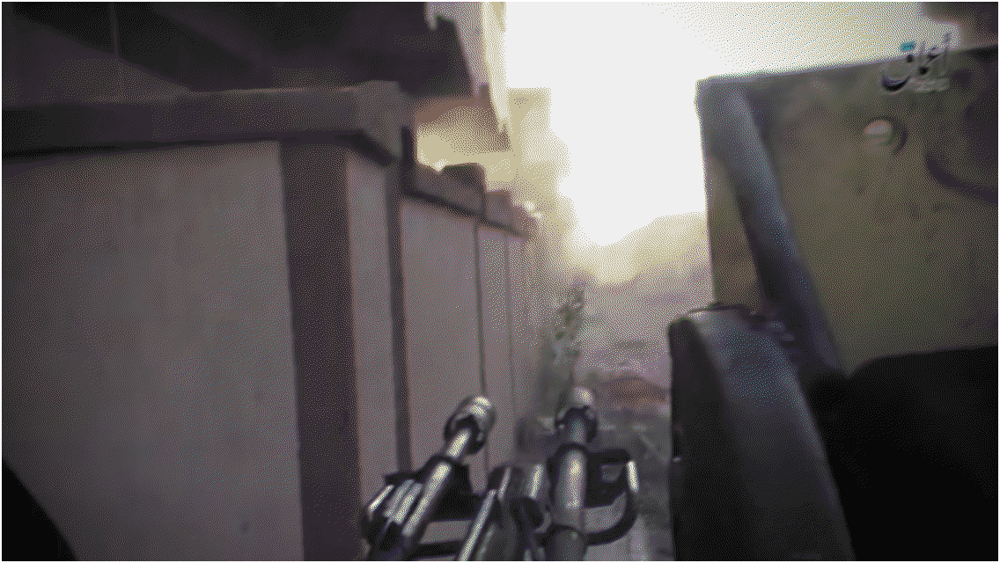
Fig 1. ISLAMIC STATE MILITANTS FIRING DOWN A ROAD ON AN AA TECHNICAL IN SIRTE, LIBYA c. JULY OF 2016
• July 16, 2015: While not the main subject of the the battle, the Islamic State was involved in Haftar 's siege of parts of Benghazi. The Islamic State engaged in combat with both rival jihadists and Haftar's forces , involving a few districts.
• June 8, 2016: The UN recognized GNA 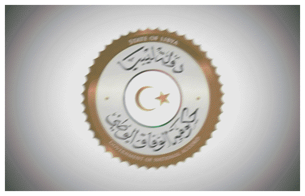
launched an offensive on the last remaining IS stronghold in Libya , Sirte, besieging it. The GNA slowly cleared the city, facing increasingly zealous and extreme Islamic State resistance , including many foreign fighters from the rest of Africa. But with renewed American air support, the GNA pushed through, liberating the city by the end of December, 2016. The fall of Sirte was a turning point of IS' operations in Libya , forcing them into a guerilla campaign. Over time, the guerilla campaign widdled down, effectively laying dormant by the 2020s.
Notable Battles Involving Islamic State - Khorosan Province
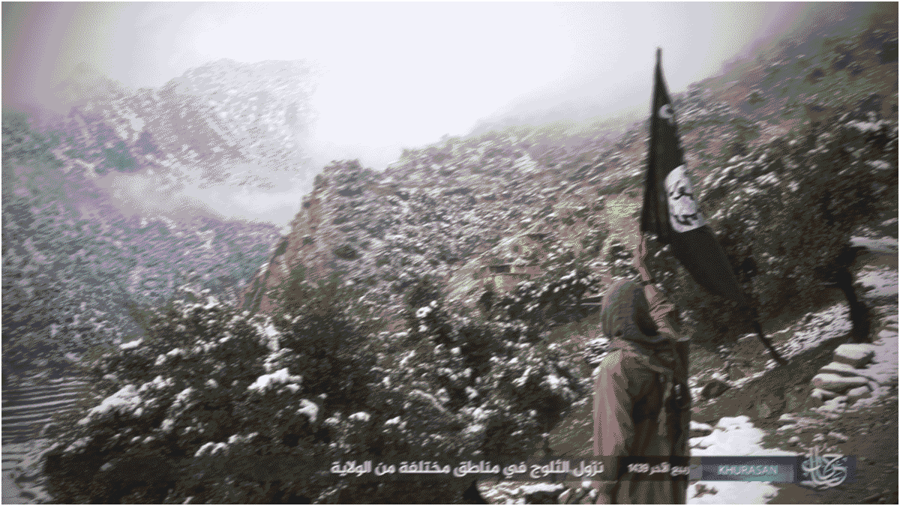
Fig 1. ISLAMIC STATE SUPPORTER/MILITANT ON THE AFGHANISTAN PAKISTAN BORDER c. DECEMBER OF 2016
• February 6, 2016: The ANA  launched a large offensive against the Islamic State Khorasan's stronghold in eastern Nangarhar, which came after weeks of increased US military raids and airstrikes against the terrorist group. With the support of locals in the province's villages, the ANA declared victory over IS , stating that 200 terrorists were killed in the three weeks of fighting. For the mean time, IS would be pushed into a guerilla warfare role.
launched a large offensive against the Islamic State Khorasan's stronghold in eastern Nangarhar, which came after weeks of increased US military raids and airstrikes against the terrorist group. With the support of locals in the province's villages, the ANA declared victory over IS , stating that 200 terrorists were killed in the three weeks of fighting. For the mean time, IS would be pushed into a guerilla warfare role.
• April 9, 2017: The Islamic state violently siezed most of Darzab and Qush Tepa district in north-central Afghanistan from the Taliban  and ANA forces. IS , who were influenced by members of the Uzbekistan Islamic Movement in that region, managed to kill local Taliban commanders, delaying their counteroffensive by a year. When it did arrive on the the 12th of July, both sides suffered heavy casualties. However, northern IS ' weakness after a major commander was killed in an American strike allowed for the Taliban to retake control of Darzab.
and ANA forces. IS , who were influenced by members of the Uzbekistan Islamic Movement in that region, managed to kill local Taliban commanders, delaying their counteroffensive by a year. When it did arrive on the the 12th of July, both sides suffered heavy casualties. However, northern IS ' weakness after a major commander was killed in an American strike allowed for the Taliban to retake control of Darzab.
• April 26, 2017: American and ANA special forces carried out an operation in Mohmand Valley on the border with Pakistan, targeting and killing the Islamic State Khorasan Province leader, Abdul Haseeb Logari. Logari was not the first, nor the last IS Khorasan to be killed by the US . In fact, three different people would command IS -K in only a two year span.
Notable Battles Involving Islamic State - Central Africa Province (AKA ADF Baluku and al-Shabaab the Mozambican group)
• June 27, 2020: Islamic State jihadists raided and temporarily captured the major port city of Mocimboa da Praia in Cabo Delgado. As the militants advanced into the city and pushed back government forces, the government began to rely on the South African 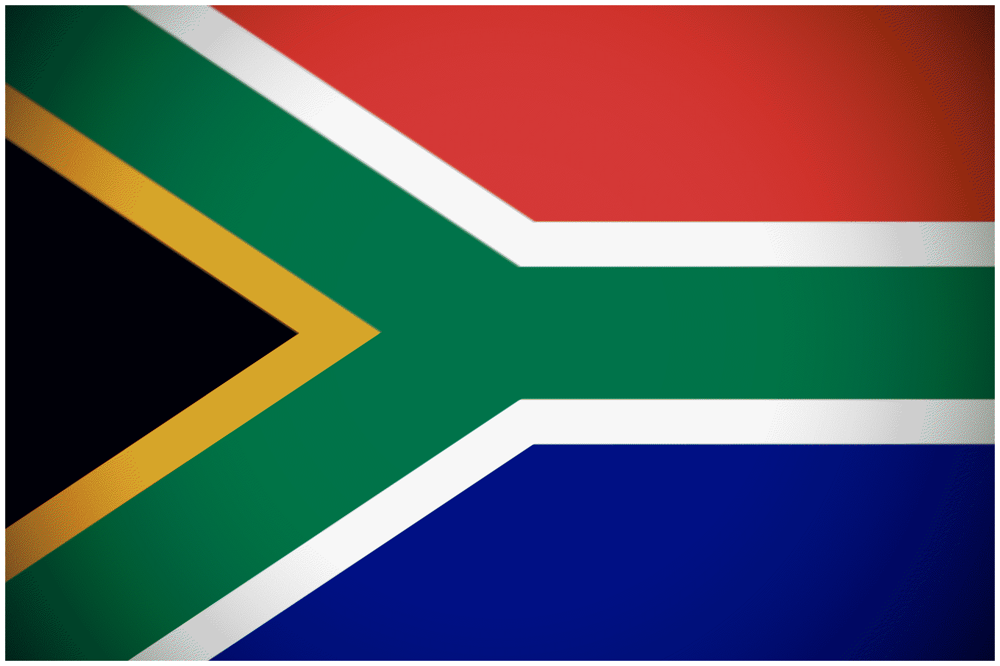
PMC group DAG, who helped with indiscriminate helicopter air support. In a few days, the Mozambican 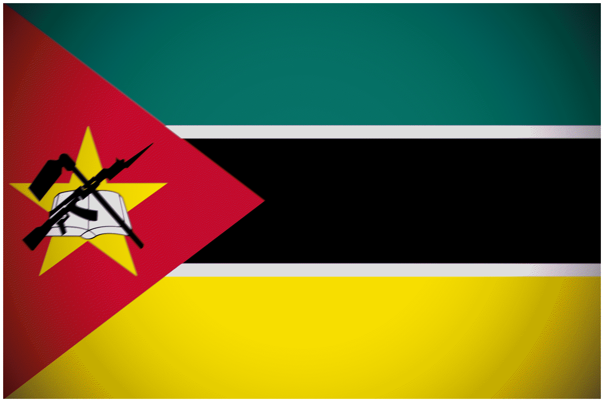
government had declared the town recaptured, despite some continued presence in the town. Both sides, including the South African PMC, were involved in atrocities and severe war crimes both during, after, and before, the battle. ACLED even went so far to say that the IS attack could be described as a response to the government's atrocities.
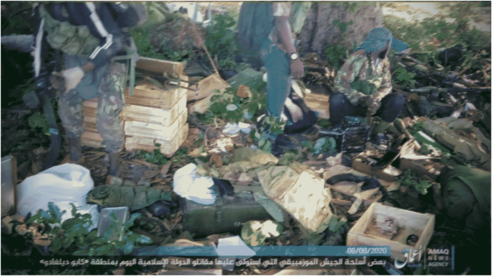
Fig 1. ISLAMIC STATE FIGHTERS SHOW THEIR LOOT TAKEN FROM MOZAMBICAN ARMY BASES IN CABO DELGADO c. AUGUST OF 2020
• August 11, 2020: The Islamic State attacked, besieged, and took control of the regional port city (and gas hub!) of Mocimboa da Praia after a battle in which dozens were killed in multiple well executed ambushes. The Islamic State secured the city, keeping it for a full year before security forces recaptured it.
• March 24, 2021: Hundreds of Islamic State militants infiltrated and assaulted the regional coastal city of Palma, seizing control of it for a few days and sending dozens to hundreds of tourists and civilians into hotels. When Mozambican forces arrived for a counteroffensive, they aided in the lift and naval evacuation, before moving in to seize the city and secure the the gas fields. The Islamic State looted and threathened the gas reserves near Palma, marking a relative strategic victory against security forces. Two years later, researchers compiled and shared data of nearly 1,200 dead civilians in a week of clashes, most of whom was due to jihadist related violence.
• April 22, 2021: As a part of their offensive campaign in Cabo Delgado, the IS Central Africa Province violently seized the town of Mucojo, a notable coastal town, from security forces . There, the IS put the town under brutal occupation, murdering and beheading officials, even a local imam. During their military offenisve six months later, the Mozambican military , with Rwandan military support  , recaptured Mucojo, from jihadist militants, ending their occupation.
, recaptured Mucojo, from jihadist militants, ending their occupation.
• July 24, 2021: Mozambique , with Rwandan and South African military support, launched a large offensive against the Islamic State in Cabo Delgado. In a few months, the "coalition" advanced through the province, recapturing Mocimboa de Praia, Mbau, and other towns and cities. The jihadists were pushed into the countryside of the already backwater Cabo Delgado. It was also a major victory for Rwanda , who participated greatly in the offensive. It would help them during their later offensive in Kivu with M23.